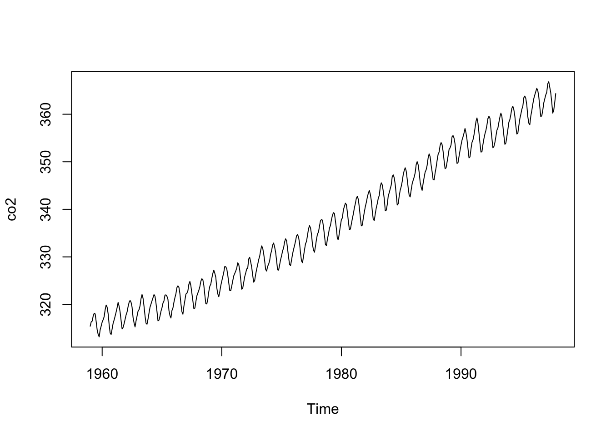

4 Reproducible Research
4.1 The reproducibility crisis
- A concerning amount of research studies have been discovered over the last decade to not be reproducible
- One aim of this chapter is to demonstrate how to write a script and then convert it into an Rmarkdown document
4.2 R Scripts
Summary statistics on dataframe about atmospheric carbon dioxide concentrations:
summary(co2)
#> Min. 1st Qu. Median Mean 3rd Qu. Max.
#> 313.2 323.5 335.2 337.1 350.3 366.8Plot the data:
plot(co2)
4.3 Analysis notebooks
- The author says that one way to combat the reproducibility crisis is to document exactly how data analysis is done
- This can be accomplished through RMarkdown
- Scripts can still be written in .R files, but should be converted to .Rmd files too
4.4 RMarkdown
- He gives a basic overview of RMarkdown including how to convert it into a pdf
- He emphasizes that R is updated roughly every six months
Record which version of R was used to create script running:
sessionInfo()
#> R version 4.1.1 (2021-08-10)
#> Platform: aarch64-apple-darwin20 (64-bit)
#> Running under: macOS Monterey 12.4
#>
#> Matrix products: default
#> BLAS: /Library/Frameworks/R.framework/Versions/4.1-arm64/Resources/lib/libRblas.0.dylib
#> LAPACK: /Library/Frameworks/R.framework/Versions/4.1-arm64/Resources/lib/libRlapack.dylib
#>
#> locale:
#> [1] en_US.UTF-8/en_US.UTF-8/en_US.UTF-8/C/en_US.UTF-8/en_US.UTF-8
#>
#> attached base packages:
#> [1] stats graphics grDevices utils datasets
#> [6] methods base
#>
#> other attached packages:
#> [1] SMPracticals_1.4-3 ellipse_0.4.3 ggplot2_3.3.6
#>
#> loaded via a namespace (and not attached):
#> [1] tidyselect_1.1.2 xfun_0.31 bslib_0.3.1
#> [4] purrr_0.3.4 splines_4.1.1 lattice_0.20-44
#> [7] colorspace_2.0-3 vctrs_0.4.1 generics_0.1.2
#> [10] htmltools_0.5.2 yaml_2.2.1 utf8_1.2.2
#> [13] survival_3.2-11 rlang_1.0.2 jquerylib_0.1.4
#> [16] pillar_1.7.0 glue_1.6.1 withr_2.4.3
#> [19] DBI_1.1.2 lifecycle_1.0.1 stringr_1.4.0
#> [22] munsell_0.5.0 gtable_0.3.0 memoise_2.0.1
#> [25] evaluate_0.15 knitr_1.39 fastmap_1.1.0
#> [28] fansi_1.0.2 highr_0.9 scales_1.1.1
#> [31] cachem_1.0.6 jsonlite_1.7.3 fs_1.5.2
#> [34] digest_0.6.29 stringi_1.7.6 bookdown_0.27
#> [37] dplyr_1.0.9 grid_4.1.1 cli_3.2.0
#> [40] tools_4.1.1 magrittr_2.0.3 sass_0.4.0
#> [43] tibble_3.1.6 crayon_1.5.0 pkgconfig_2.0.3
#> [46] downlit_0.4.0 Matrix_1.3-4 ellipsis_0.3.2
#> [49] MASS_7.3-58 xml2_1.3.3 assertthat_0.2.1
#> [52] rmarkdown_2.14 rstudioapi_0.13 R6_2.5.1
#> [55] nlme_3.1-152 compiler_4.1.1